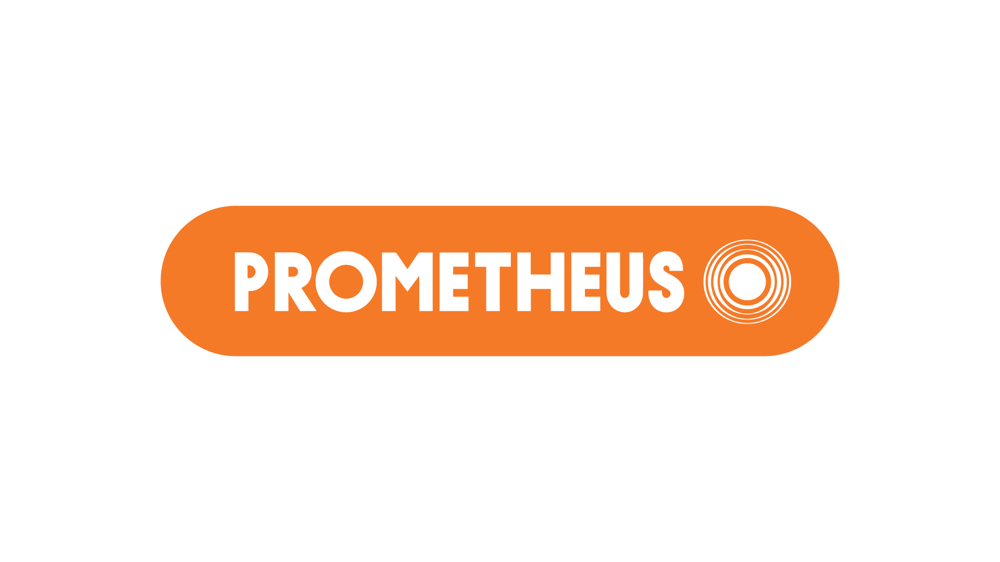
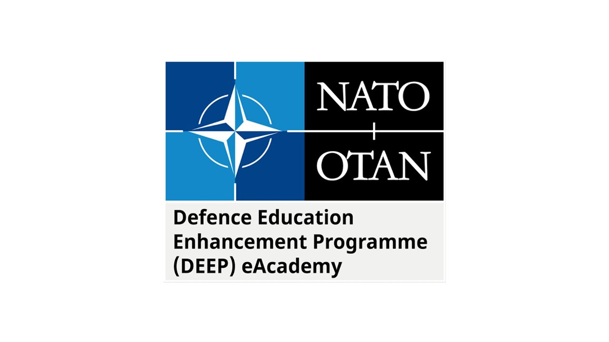

Підвищення кваліфікації
Метою підвищення кваліфікації педагогічних і науково-педагогічних працівників Військового коледжу сержантського складу Харківського національного університету Повітряних Сил імені Івана Кожедуба є їх професійний розвиток відповідно до державної політики у сфері освіти, вимог щодо забезпечення якості освітньої діяльності та завдань підготовки військових фахівців. Відповідно до Постанови Кабінету Міністрів України від 21 серпня 2019 року №800 «Деякі питання підвищення кваліфікації педагогічних і науково-педагогічних працівників» у Коледжі діє накопичувальна система підвищення кваліфікації. Загальний обсяг підвищення кваліфікації педагогічних та науково-педагогічних працівників протягом п’яти років не може бути меншим ніж шість кредитів ЄКТС (180 годин). Більш детальна інформація щодо підвищення кваліфікації педагогічних і науково-педагогічних працівників наведена у Положенні про професійний розвиток педагогічних та науково-педагогічних працівників ВКСС ХНУПС. Харківський національний університет Повітряних Сил імені Івана Кожедуба (як базовий заклад) проводить ліцензовані курси підвищення кваліфікації, до яких можуть залучатися педагогічні та науково-педагогічні працівники Коледжу, зокрема: Курси підвищення кваліфікації з питань методичної майстерності тривалістю 240 годин (8 кредитів ЄКТС); Курси підвищення кваліфікації з питань освітньої діяльності тривалістю 120 годин (4 кредити ЄКТС).КОРИСНІ ПОСИЛАННЯ:

Український громадський проект
масових відкритих онлайн-курсів
«Prometheus»
(безкоштовно)
https://prometheus.org.ua/courses-catalog/
